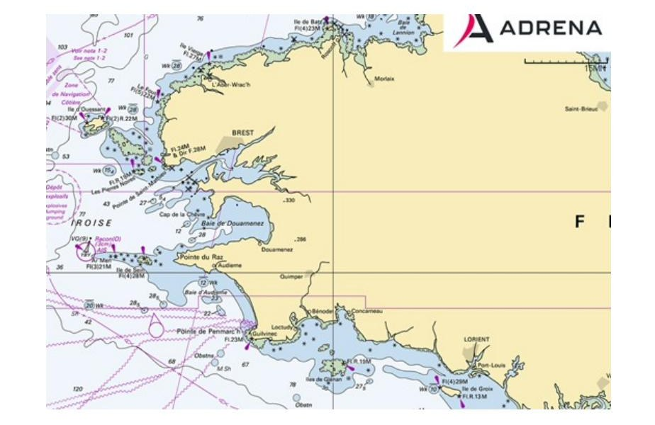
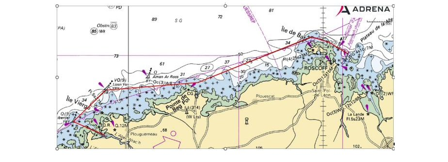
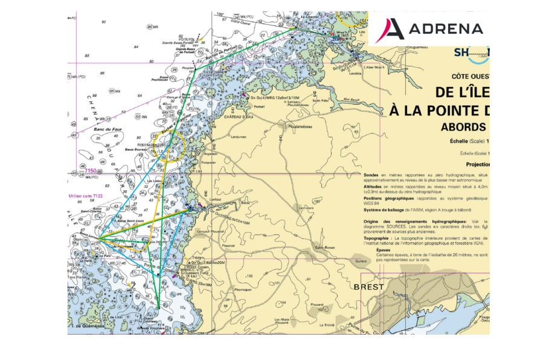
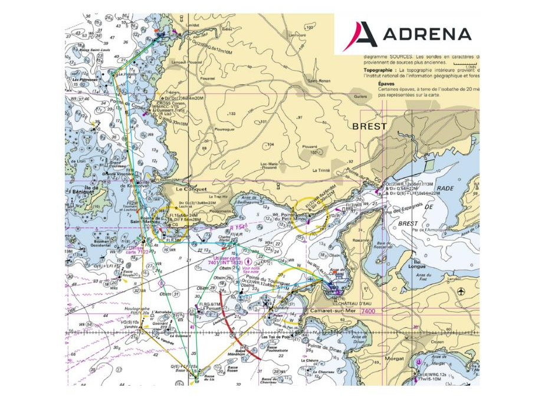
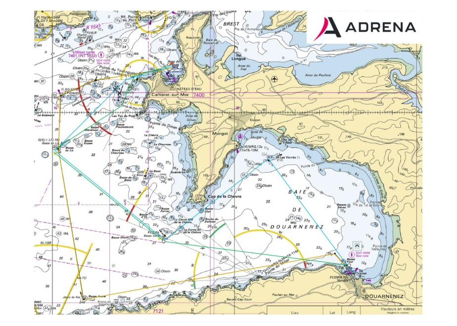
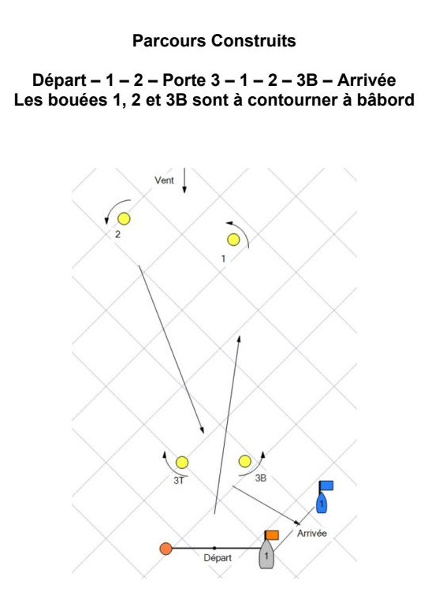
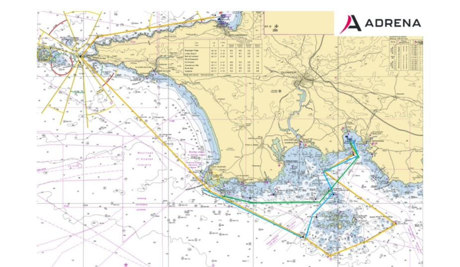
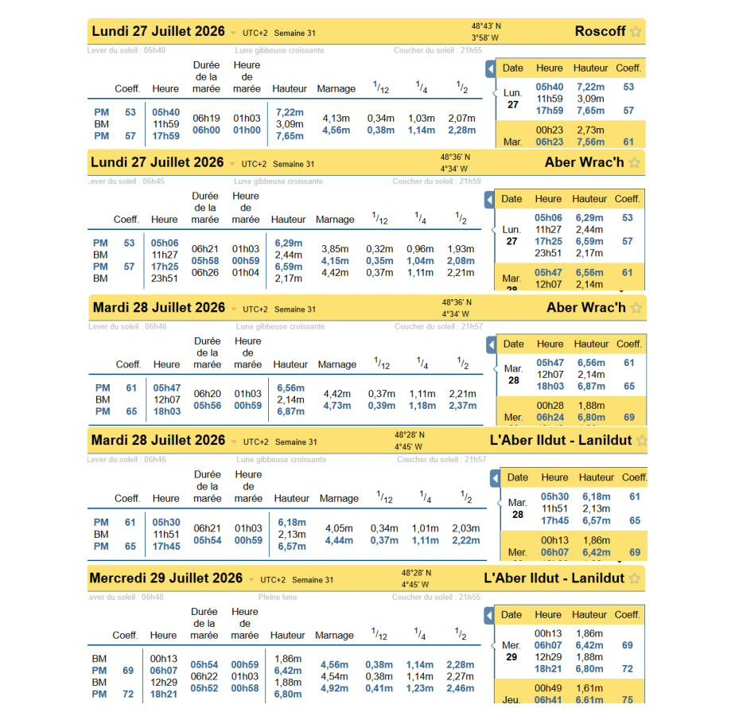
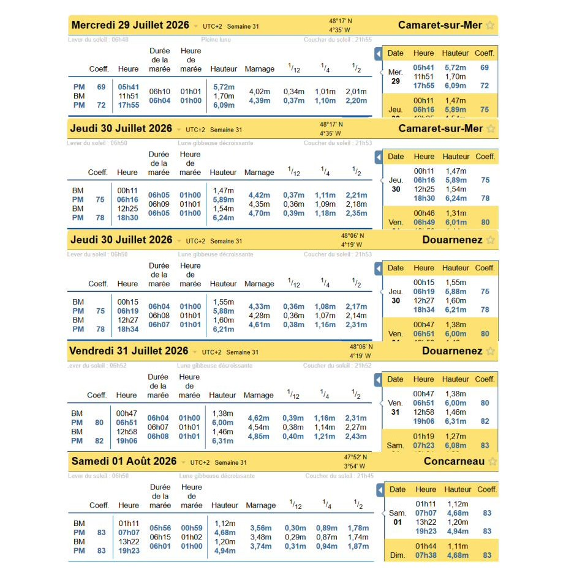

Tour du Finistère à la Voile 2026 — Grade 3, 27 juillet au 1er août 2026. Source exclusive : Instructions de Course officielles CDV29 (Comité Départemental de Voile du Finistère). Reproduction intégrale du texte réglementaire et des annexes graphiques (cartes, croquis, tableaux de marées).
La mention [NP] (No Protest) dans une règle des instructions de course (IC) signifie qu'un bateau ne peut pas réclamer contre un autre bateau pour avoir enfreint cette règle. Ceci modifie la RCV 60.1.
La mention [DP] (Discretionary penalty) dans une règle des IC signifie que la pénalité pour une infraction à la règle peut, à la discrétion du jury, être inférieure à une disqualification.
Le Tour du Finistère est organisé par le Comité Départemental de Voile sous l'égide de la Fédération Française de Voile en collaboration avec les villes et les ports d'escales.
Le Tour du Finistère est parrainé par le Conseil Départemental du Finistère, les Villes de Roscoff, Landéda, Lanildut, Camaret, Douarnenez, et la Forêt-Fouesnant, les associations des villes-étapes, le Crédit Agricole du Finistère, Caillarec, Brittany Ferries, Bodemer Auto, Tubomax, Haka, Finistère Mer et Vent, Axyomes, la Chambre de Commerce et d'Industrie Finistère et Roscoff Port.
Comité d'Honneur
Mael de CALAN Président du Conseil Départemental du Finistère
Philippe HILLION Président du Comité Départemental de Voile du Finistère
Comité d'Organisation
Philippe HILLION Président du Comité d'Organisation
1.1 L'épreuve est régie par les règles telles que définies dans Les Règles de Course à la Voile.
1.2 Les manifestations sportives sont avant tout un espace d'échanges et de partage accessible à toutes et à tous. A ce titre, il est demandé aux concurrents, aux concurrentes, aux accompagnateurs et aux accompagnatrices de se comporter en toutes circonstances, à terre comme sur l'eau, de façon courtoise et respectueuse indépendamment de l'origine, du genre ou de l'orientation sexuelle des autres participants, participantes, accompagnateurs ou accompagnatrices. Un concurrent, une concurrente, un accompagnateur ou une accompagnatrice qui ne respecterait pas ces principes pourra être pénalisé selon la RCV 2 ou 69.
2.1 Toute modification aux IC sera publiée au plus tard 2 heures avant le signal d'avertissement de la course dans laquelle elle prend effet. Un changement de programme pourra être décidé 4 heures avant le signal d'avertissement du jour.
2.2 Des modifications à une instruction de course peuvent être faites sur l'eau selon de la procédure suivante. Le comité déploiera les Lsur I avec un signal sonore et donnera les informations sur le canal VHF de course.
3.1 Les avis aux concurrents seront publiés sur le tableau officiel d'information dont l'emplacement est https://www.cdv29.com/tour-du-finistere-a-la-voile/
Un groupe WhatsApp est mis en place pour communiquer entre l'organisation terre et mer vers les concurrents. Il ne remplace en aucun cas le tableau officiel. QR Code ci-dessous
3.2 Sur l'eau, le comité de course a l'intention de veiller et de communiquer avec les concurrents sur le canal VHF 77.
3.3 Le Tableau officiel JURY sera sur le site de jury Décisions jurydecisions.ffvoile.fr/events/Tour du Finistère à la Voile 2026
4.1 Les concurrents et les accompagnateurs doivent se conformer aux demandes justifiées des arbitres.
4.2 Les concurrents et les accompagnateurs doivent placer la publicité fournie par l'autorité organisatrice avec soin, en bon marin, conformément aux instructions d'utilisation et sans gêner son fonctionnement
5.1 A TERRE
Sauf indication contraire dans les annexes, le mât de pavillon à terre sera au mât de pavillons situé sur le bateau comité lorsque celui-ci est au port.
"APERCU" signifie : le départ est retardé, vous devez rester au port, le signal d'avertissement ne sera pas fait moins de 30 mn après l'affalé de l'Aperçu. Ceci modifie « signaux de course » des RCV
5.2 EN MER
«B» arboré par le bateau Comité signifie qu'un parcours de type « Construit » tel que défini en annexe parcours des présentes instructions de course va être mis en place.
«D» : arboré par le bateau Comité avant le départ d'une course signifie qu'il existe une marque de dégagement. (Voir IC 9.3).
«2ème Substitut» : arboré par un bateau du comité à proximité d'une marque signifie que ce bateau du comité effectue un pointage officiel. (Voir IC 9.5).
«F» : voir IC 9.1 (modification du coefficient de la course par le Comité).
«S sur H» : arboré par un bateau du comité de course signifie que la course en cours est arrêtée, le dernier pointage officiel sera pris en compte comme ordre d'arrivée pour la (les) classe(s) concernée(s). (Voir IC 9.5).
«L sur I» : arboré par un bateau du comité de course, appuyé d'un signal sonore, d'une communication VHF, et éventuellement d'une information sur tableau à bord du bateau Comité signifie, conformément à la règle 90.2 (c) des RCV, que des modifications aux Instructions de Course sont données verbalement sur l'eau
«O» arboré par un bateau du comité de course, appuyé de signaux sonores répétés, d'une communication VHF éventuellement signifie, rejoignez directement la ligne d'arrivée.
6.1 Dates des courses
| Date | Étape | 1er Signal Avertissement |
|---|---|---|
| Lundi 27Juillet | Roscoff vers Aber Wrac'h | 9h30 |
| Mardi 28 Juillet | Aber Wrac'h vers Lanildut | 9h30 |
| Mercredi 29 Juillet | Lanildut vers Camaret | 09h30 |
| Jeudi 30 Juillet | Camaret vers Douarnenez | 09h30 |
| Vendredi 31 Juillet | Douarnenez Parcours Construit | 13h00 |
| Vendredi 31 Juillet | Douarnenez Port la Forêt | 17h00 |
| Samedi 01 Août | Arrivées Port la Forêt |
6.2 Pour prévenir les bateaux qu'une course ou séquence de courses va bientôt commencer, un pavillon Orange sera envoyé cinq minutes au moins avant l'envoi du signal d'avertissement.
Les bateaux doivent montrer, quand ils sont en course, la flamme ou le pavillon de leur série (frappée dans le pataras ou sur le hauban tribord pour les bateaux ne possédant pas de pataras)
Ces flammes ou pavillons de série sont indiqués ci-dessous :
| Classification | Groupe | Signal Avertissement | Flamme bateau |
|---|---|---|---|
| OS1 | BODEMER MORLAIX | BLEU | Bleu |
| OS2 | CRÉDIT AGRICOLE | CA | Crédit Agricole |
| OS3 | CAILLAREC | CAILLAREC | Caillarec |
| IRC | TOUT COMMENCE EN FINISTÈRE | TCF | Tout Commence en Finistère |
L'emplacement des zones de course est défini en annexe ZONES DE COURSE.
9.1 La zone de départ est normalement désignée en annexe. Si le Comité est contraint au choix d'une autre zone de départ, le pavillon « L » est envoyé sur le bateau comité ce qui signifie alors : « Suivez-moi jusqu'à une nouvelle zone de départ ».
Les concurrents doivent être en mesure de se rendre sur cette nouvelle zone, même par vent nul, où le Comité de Course attendra un délai raisonnable avant de donner le départ.
Il affichera sur un tableau le numéro ou le nom de la marque du parcours initial devenant première marque du nouveau parcours (après bouée de dégagement éventuellement), l'ordre de passage des marques suivantes restant inchangé. Si cette mesure est appliquée, le coefficient de la course peut être multiplié par 0,5 et dans ce cas le pavillon «F» sera arboré par le Bateau Comité avant le signal d'avertissement.
9.2 Au plus tard au signal d'avertissement, le comité de course indiquera le parcours à effectuer, et, si nécessaire, le cap et la longueur approximatifs du premier bord du parcours.
Le parcours à effectuer sera indiqué sur un tableau au bateau comité.
9.3 Parcours Côtiers : Au plus tard au signal d'avertissement, le comité de course enverra le pavillon D si le parcours comprend une marque de dégagement. Il enverra le pavillon vert pour indiquer qu'elle est à contourner en la laissant à tribord. L'absence de pavillon vert signifie qu'elle est à contourner en la laissant à bâbord (ceci modifie Signaux de course).
9.4 Le Comité de Course peut modifier le parcours après le départ aux marques à contourner en annexe parcours. Il est donc demandé aux concurrents de surveiller attentivement les abords de ces marques.
Le changement de parcours est signalé près de la marque commençant la section de parcours changée par un bateau du Comité de Course qui :
Le changement est indiqué avant que le voilier de tête ait commencé cette nouvelle section de parcours.
Si le bateau du Comité est mouillé, les concurrents devront, en venant de la dernière marque, passer entre la marque commençant la section du parcours changée et le Bateau du Comité mentionné plus haut ayant également rang de marque puis contourner l'une ou l'autre de ces marques.
Dans le cas d'une modification dans un parcours côtier, la ou les marques comprises entre le bateau du comité signalant la modification de parcours et la marque affichée comme « marque suivante », seront neutralisées et ne seront pas à respecter.
Les concurrents devront continuer leur course en suivant l'ordre chronologique comme défini dans le parcours.
9.5 Pointage officiel à une marque : Le comité de course peut interrompre une course selon l'une des causes prévues par la RCV 32.1 et la valider en prenant pour ordre d'arrivée le dernier pointage officiel à une des marques à contourner précisées en annexe PARCOURS (ceci modifie la RCV 32).
Dans ce cas, si un bateau du comité de course arborant le 2ème substitut et le « Pavillon de Série » des séries concernées. Si absence de pavillons de série, cela concerne toutes les séries. (Modification des signaux de course) se tient près de la marque du côté parcours, l'ensemble marque et Bateau Comité constituant une porte, il effectue un pointage officiel des concurrents. Le Bateau Comité pourra émettre des signaux sonores répétitifs à l'approche des concurrents.
En conséquence :
1 : Les concurrents devront franchir la ligne définie entre la marque et le mât de référence du Bateau Comité (ceci modifie RCV 28).
2 : Les concurrents devront continuer leur course.
Si par la suite, le Comité de Course décide d'arrêter la course, il arborera les pavillons « S sur H » et le « Pavillon de Série » des séries concernées Si absence de pavillons de série, cela concerne toutes les séries. (Modification des signaux de course)
«La course est arrêtée, le dernier pointage officiel sera pris en compte comme ordre d'arrivée ; Tout événement susceptible de donner lieu à réclamation survenant depuis le passage de cette ligne ainsi validée comme ligne d'arrivée de la course ne pourra être pris en compte, et aucun bateau ne pourra être pénalisé sauf en conséquence d'une action selon une règle fondamentale ou selon la RCV 69.»
Le Comité de Course confirmera si possible ces indications par V.H.F.
9.6 Le Pavillon O envoyé au voisinage d'une marque à contourner signifie : après le passage de cette marque, rejoignez directement la ligne d'arrivée, en respectant le balisage et les dangers.
Des signaux sonores brefs seront émis par le bateau commissaire ou Comité à proximité de la marque pour attirer l'attention des concurrents.
9.7 Définition des parcours
Les différents parcours mis en place pour chaque étape sont définis en annexe parcours.
Les positions géographiques, figurant sur les tableaux de parcours donnés en annexe ne sont données qu'à titre indicatif et une erreur dans celles-ci ne peut donner lieu à réparation.
L'ensemble des marques figurant sur les tableaux de parcours donnés en annexe sont, sauf précisions données dans ces tableaux, des marques à contourner.
En cas de différence entre les tableaux de parcours et les schémas, les tableaux de parcours doivent être pris en compte prioritairement.
10.1 Les marques sont :
| Départ | Parcours | Dégagement | Changement | Arrivée |
|---|---|---|---|---|
| Cylindrique Orange | Cylindrique Jaune et/ou marques de balisage | Cylindrique Orange | Cylindrique Orange | Conique Orange |
10.2 Un bateau du comité de course signalant changement d'un bord du parcours est une marque.
Les zones considérées comme des obstacles sont précisées en annexe ZONES DE COURSE.
12.1 La ligne de départ sera entre le mât arborant un pavillon orange sur le bateau du comité de course à l'extrémité tribord et le côté parcours de la marque de départ à l'extrémité bâbord.
12.2 [DP] [NP] Bateaux en attente : les bateaux dont le signal d'avertissement n'a pas été donné doivent éviter la zone de départ pendant la procédure de départ des autres bateaux.
12.3 Si une partie quelconque de la coque d'un bateau est du côté parcours de la ligne de départ à son signal de départ et qu'il est identifié, le comité de course pourra donner son numéro de voile sur le canal VHF donné en IC 3.2, une minute après le départ. L'absence d'émission ou de réception VHF ne peut donner lieu à demande de réparation (ceci modifie la RCV 61.1(a)).
12.4 Un bateau qui ne prend pas le départ au plus tard 4 minutes après son signal de départ sera classé DNS sans instruction (ceci modifie les RCV A5.1 et A5.2).
12.5 Le comité pourra être amené à mettre en place une procédure de départ sans que les extrémités de la ligne ne soient mouillées. Les RCV 29 s'appliqueront de la même façon.
13.1 Pour changer le bord suivant du parcours, le comité de course mouillera une nouvelle marque (ou déplacera la ligne d'arrivée) et enlèvera la marque d'origine aussitôt que possible. Quand lors d'un changement ultérieur, une nouvelle marque est remplacée, elle sera remplacée par une marque d'origine.
13.2 Sauf à une porte, les bateaux doivent passer entre le bateau du comité de course signalant le changement du bord suivant et la marque la plus proche, en laissant celle-ci du côté requis (ceci modifie la RCV 28).
14.1 La ligne d'arrivée sera entre un mât arborant un pavillon bleu et le côté parcours de la marque d'arrivée.
14.2 [DP] Si le comité de course est absent quand un bateau finit, le bateau doit déclarer au comité de course son heure d'arrivée et sa position par rapport aux bateaux à proximité, à la première occasion raisonnable.
15.1 Pour tous les groupes, la RCV 44.1 est modifiée de sorte que la pénalité de deux tours est remplacée par une pénalité d'un tour.
15.2 Quand les règles du chapitre 2 des RCV ne s'appliquent plus et sont remplacées par la partie B section II du RIPAM, la RCV 44.1 ne s'applique pas.
15.3 [DP] Une infraction aux règles à l'exception des RCV du chapitre 2 et des RCV 28 et 31 pourra être sanctionnée d'une pénalité pouvant être inférieur à DSQ
16.1 Les temps sont les suivants :
Pour l'ensemble des courses, sauf pour les parcours « Construits » et la course de nuit, les bateaux arrivés au-delà de l'heure du coucher du soleil (21h45) sont classés DNF (ceci modifie les RCV 35, A5.1 et A5.2).
Pour les parcours de type « Construits », les bateaux arrivés au-delà de 45 minutes après l'arrivée du 1er de chaque série seront classés DNF.
Pour la course de nuit, les bateaux arrivés après 12 H le lendemain du départ sont classés DNF.
17.1 Pour chaque classe, le temps limite de réclamation est de 60 minutes après que le dernier bateau a fini la dernière course du jour ou après que le comité de course a signalé qu'il n'y aurait plus de course ce jour, selon ce qui est le plus tard. L'heure sera publiée sur le tableau officiel du JURY sur le site jury décisions.
17.1.1 Les instructions de protestations seront instruites aux escales de Lanildut, Douarnenez et Port la Forêt.
17.2 Les formulaires de demandes d'instruction sont disponibles au secrétariat du jury situé au car podium de chaque étape.
17.3 Des avis seront publiés au plus tard 30 minutes après le temps limite de réclamation pour informer les concurrents des instructions dans lesquelles ils sont parties ou appelés comme témoins. Les instructions auront lieu dans la salle du jury située à proximité du village étape. Elles commenceront à l'heure indiquée au tableau officiel du Jury
18.1 Une course doit être validée pour valider la compétition.
18.2 Le score d'un bateau dans une série doit être le total des scores de ses courses.
Les courses sont affectées d'un coefficient 1, sauf pour la course in shore coefficient 0.5 et la course de nuit coefficient 1.5.
18.3 Le temps réel de chaque concurrent est relevé à l'arrivée et le classement de chaque étape se fait au temps compensé par l'intermédiaire du coefficient de handicap figurant sur le certificat Osiris ou IRC propre à chacun des bateaux. Pour les séries OSIRIS le CVL (coefficient de vent léger) ne sera pas pris en compte.
Le classement en temps compensé sera effectué en heures, minutes, secondes et 1/100 de seconde.
L'attribution des points pour chaque course se fait selon le système de classement a minima (annexe A4) et application du coefficient multiplicateur affecté aux parcours. (Voir annexe parcours et articles 10.1 des présentes instructions de course)
L'ensemble des courses sera pris en compte pour le classement général.
En modification de l'annexe A8.1 des RCV, le départage des égalités se fera sur le résultat de la course de nuit puis si l'égalité persiste l'annexe A8 s'appliquera.
18.4 Les coefficients à utiliser pour le calcul des temps compensés seront affichés au tableau officiel d'information, à Roscoff, et au plus tard une heure avant l'heure prévue pour le départ de la première course. Les réclamations concernant ces coefficients sont admises jusqu'à l'heure limite de réclamation du premier jour.
18.5 Classements établis :
Chaque groupe de classement aura un classement distinct
La répartition des groupes de classement sera établie pour équilibrer au mieux le nombre de concurrents et les écarts de rating des bateaux dans chacun des groupes.
Ces groupes de classements seront affichés à l'ouverture de la confirmation des inscriptions à Roscoff.
D'autres classements annexes seront établis :
Trophée Tour du Finistère :
Le Trophée Tour du Finistère sera attribué au bateau totalisant le minimum de points à l'issue de l'épreuve.
Ce nombre de points sera pondéré par un coefficient K (K = P / I)
P = total des points obtenus par le bateau à l'issue du Tour.
I = nombre d'inscrits dans le groupe du bateau.
Classement des Clubs :
A l'issue du classement général de chaque catégorie de course, un nombre de points correspondant à sa place est attribué à chaque concurrent. On procède à l'addition des points ainsi attribués pour les 3 meilleures places réalisées par chaque club, 2 bateaux au plus pouvant être pris en compte dans le même groupe de classement.
En cas d'égalité, le classement sera fait sur les 4 meilleures places réalisées par les clubs à égalité, puis sur les 5 meilleures places et ainsi de suite jusqu'au départage des ex-æquo.
Le club marquant le nombre de points le plus bas gagne.
L'appartenance à un club est celle mentionnée sur le bulletin d'inscription ou, si cette mention n'existe pas, déterminée par la licence du skipper.
L'appartenance à un club ne pourra pas être modifiée en cours d'épreuve.
Classement des Monotypes et / ou bateaux de la même série
Quand ils réunissent une flotte égale ou supérieure à 5 bateaux, les monotypes ou les bateaux de la même série, conformes à leurs règles de classe ou ceux possédant le même groupe net Osiris habitable, feront pour le classement général, l'objet d'un classement spécifique. Ce classement sera extrait du classement général de leur groupe de classement
Classement Jeunes :
Pour intégrer ce classement le bateau devra être composé pour l'ensemble des courses de 50% ou plus (arrondi au chiffre supérieur) de personnes ayant moins de 26 ans dans l'année 2026 (exemple 4 jeunes pour un équipage de 7 personnes, 4 jeunes pour un équipage de 8 personnes). Ce pourcentage minimum de jeunes devra être effectif sur toutes les courses.
Les équipages remplissant les conditions pour intégrer ce classement devront le confirmer sur la fiche d'inscription ou à la chaine d'inscriptions à Roscoff.
Classement Mixte :
Pour intégrer ce classement le bateau devra être composé pour l'ensemble des courses de 50 % ou plus (arrondi au chiffre supérieur) de personnes de sexe féminin (exemple 4 femmes pour un équipage de 7 personnes, 4 femmes pour un équipage de 8 personnes)
Ce pourcentage minimum de femmes devra être effectif sur toutes les courses.
Les équipages remplissant les conditions pour intégrer ce classement devront le confirmer sur la fiche d'inscription ou à la chaine d'inscriptions à Roscoff.
19.1 [DP][NP] Le canal V.H.F. utilisé par le Comité de Course est le "77" et la veille est obligatoire.
Les concurrents devront porter un équipement individuel de flottabilité (brassière) conforme à la réglementation en vigueur. Ceci dès le départ du ponton de la ville de départ à l'arrivée. Le gilet pourra être enlevé pour se changer en cabine.
Lorsqu'ils sont à environ 2 milles de la ligne d'arrivée, il est demandé aux premiers concurrents en temps réel de s'annoncer au Comité de Course par VHF canal 77
Il est demandé d'utiliser la double-veille 16 et 77.
En cas d'accident (May Day, Pan Pan ou Sécurité) vous devez appliquer les procédures réglementaires (appel canal 16) et si votre VHF est défectueuse, vous pouvez appeler l'organisation du Tour du Finistère ou les CROSS aux numéros de téléphone suivants :
Comité de Course : 07 87 81 27 96
Cross Corsen : 02 98 89 31 31 ou 196
(Attention ces n° ne sont à utiliser qu'en cas d'accident ou d'urgence et de privilégier l'appel vers le Comité de Course).
Les organisateurs du Tour de Finistère recommandent aux concurrents d'utiliser systématiquement les harnais de sécurité, en cas de vent fort et lors de la course de nuit.
Avant le départ de l'étape de nuit, nous vous demandons de vous équiper de flash lights et de vérifier le bon fonctionnement de votre VHF, du feu à retournement de la bouée fer à cheval et la charge de vos batteries. Les bateaux ayant un AIS doivent le laisser en veille lors de la course de nuit.
19.2 [DP] [NP] Un bateau qui abandonne une course doit le signaler au comité de course aussitôt que possible. Tout bateau qui abandonne doit affaler son pavillon de course et tout mettre en œuvre pour avertir immédiatement le Comité de Course par VHF 77 ou (tél. 07 87 81 27 96). Il devra remettre sa déclaration d'abandon au secrétariat dès que possible.
19.3 Utilisation du Bout dehors :
Sauf si les règles de classe le précisent autrement, la sortie du bout dehors est autorisée uniquement pour établir et porter le spinnaker.
20.1 [DP] Le propriétaire ou son représentant devra compléter en ligne sur le site Web ou déposer au Centre de Course à Roscoff, avant 19 H dimanche 26 juillet, la liste d'équipage mentionnant les personnes embarquées sur chacune des étapes du Tour du Finistère.
A cette liste devront être jointes les numéros de licences FFV 2026 mention « Compétition » ou les numéros de licence FFV 2026 « Adhésion » accompagné d'un certificat médical de non contre-indication à la pratique de la voile en compétition embarquées ainsi qu'une autorisation parentale pour les mineurs.
Cette liste d'équipage et les numéros des licences « compétition » pourront être renseignés sur le site web du Tour du Finistère à la voile
En cas de modification imprévue de l'équipage lors de l'une des étapes, une demande écrite devra être remise au Président du Comité de Course, elle devra être accompagnée de la nouvelle liste d'équipage. Cette demande devra être déposée au secrétariat de course, accompagnée des licences avec visa médical, ainsi que d'une autorisation parentale pour les mineurs. Ceci avant l'heure prévue pour le premier signal d'avertissement de l'étape où l'équipage est modifié. (DP)
20.2 Nombre de personnes embarquées
Chaque bateau devra au minimum compter 3 personnes (sauf IRC Double) à bord durant chaque étape. Le nombre de personnes embarquées ne devra pas excéder le nombre de places marquées sur le radeau de survie, ni celui autorisé sur l'acte de francisation. (DP)
20.3 [DP] Le remplacement d'équipement endommagé ou perdu ne sera pas autorisé sans l'approbation du comité technique ou du comité de course. Les demandes de remplacement doivent lui être faites à la première occasion raisonnable.
21.1 Un bateau ou son équipement peuvent être contrôlés à tout moment pour vérifier la conformité aux règles de classe, à l'avis de course et aux instructions de course.
21.2 [DP] Sur l'eau, un membre du comité technique peut demander à un bateau de rejoindre immédiatement une zone donnée pour y être contrôlé.
21.3 [DP] Un bateau doit être conforme aux règles 75 minutes avant son signal d'avertissement.
21.4 Pour la classe Osiris, la règle C.10.4.2.2 s'applique pour la course de nuit. Un spinnaker symétrique ou asymétrique supplémentaire dont les dimensions n'amènent aucun malus est autorisé. Un marquage sera effectué par le comité technique.
21,5 [DP] Nombre de voiles autorisées
Le même jeu de voiles doit être embarqué pendant toute la durée d'une épreuve.
Les bateaux officiels sont identifiés :
Le bateau Comité arbore un pavillon « FF Voile Arbitre ».
Les bateaux commissaires portent une flamme « FF Voile »
Le bateau Jury porte un Pavillon Jaune Sigle Jury en bleu
23.1 [DP] [NP] Les accompagnateurs doivent rester en dehors des zones où les bateaux courent depuis le signal préparatoire de la première classe à prendre le départ jusqu'à ce que tous les bateaux aient fini ou abandonné ou que le comité de course signale un retard, un rappel général ou une annulation.
23.2 [DP] [NP] Les bateaux accompagnateurs doivent être identifiés par un pavillon CDV29.
23.3 La règlementation des conditions d'intervention des accompagnateurs sur les compétitions de la FFVoile s'appliquera.
23.4 [DP] [NP] Les bateaux accompagnateurs doivent avoir à bord :
Les pilotes des bateaux accompagnateurs doivent se conformer à toute demande des arbitres ou des représentants de l'autorité organisatrice, particulièrement celles concernant l'assistance.
Les bateaux accompagnateurs doivent respecter les règles de navigation en vigueur localement, en particulier le respect des limitations de vitesse dans les différentes zones.
Les détritus peuvent être placés à bord des bateaux officiels et/ou accompagnateurs.
[DP][NP] Les bateaux doivent être maintenus à la place qui leur a été attribuée quand ils se trouvent dans le port.
[DP] [NP] Les bateaux ne doivent pas être sortis de l'eau pendant la régate sauf sous réserve et selon les termes d'une autorisation écrite préalable du comité de course ou du comité technique.
27.1 [DP] [NP] Leur utilisation sera liée à la réglementation locale (zone portuaire, etc.).
27.1 [DP] [NP] Les appareils de respiration sous-marine et les housses sous-marines de protection ou leur équivalent ne doivent pas être utilisés à proximité de quillards entre le signal préparatoire de la première course et la fin de la dernière course de l'épreuve.
27.2 [DP] [NP] Les quillards ne doivent pas être nettoyés en-dessous de la ligne de flottaison par quelque moyen que ce soit au cours de l'épreuve
Des prix seront distribués par groupe de classement suivant l'IC 18.5.
ARBITRES DÉSIGNÉS
Président du comité de course : BOURNOT Eric
Comités Adjoints : BLANCKAERT Godelieve – LE MER Michel – TARSIGUEL Michel – LEAUSTIC Christian
Président du comité technique : LE BRETON Bruno
Adjoint Comité Technique : CARIOU Christian
Président du jury : REMY Laurent
Juges Adjoints : TYMEN LE FLOCH Cecile – LE MAITRE Bruno
Commissaire aux résultats : HILLION Maryse
Zones couvertes par les cartes marines SHOM conseillées : 7150, 6930, 7151, 7031, 7146, 7066, 7147, 7148, 7177, 6680, 7149 A.

Positions données à titre indicatif (erreur non susceptible de réparation). En cas de différence avec les schémas, les tableaux ci-dessous priment (IC art. 9.7).
| Ordre | Waypoint | Côté | Position |
|---|---|---|---|
| Départ | Roscoff | IC 12.1 | 48°43,598 N 003°56,686 W |
| — | Bouée de dégagement éventuelle | Voir IC 9.3 | |
| 1 | N°2 Roscoff | Contourner Bâb, | 48°44,305 N 003°56,250 W |
| 2 | Basse Astan | Contourner Bâb, | 48°44,910 N 003°57,700 W |
| 3 | Le Taureau | Laisser Bâb, | 48°45,575 N 003°59,350 W |
| 4 | Grande Basse | Laisser Bâb, | 48°46,035 N 004°01,645 W |
| 5 | Basse Toullcoz | Contourner Trib, | 48°41,410 N 004°19,250 W |
| 6 | Lizen Ven | Laisser Bâb, | 48°40,615 N 004°33,465 W |
| 7 | Libenter | Contourner Bâb, | 48°37,440 N 004°38,500 W |
| 8 | Petit Pot de Beurre | Laisser Bâb, | 48°37,130 N 004°36,235 W |
| 9 | Arrivée Aber Wrac'h | Voir IC 14.1 | 48°36,010 N 004°33,865 W |

| Ordre | Waypoint | Côté | Type | Position |
|---|---|---|---|---|
| Départ | Aber Wrac'h | IC 12.1 | 48°36,890 N 004°35,410 W | |
| — | Bouée de dégagement éventuelle | Voir IC 9.3 | ||
| 1 | Petit Pot de Beurre | Laisser Trib, | Card Est | 48°37,130 N 004°36,235 W |
| 2 | Libenter | Laisser Trib, | Card Ouest | 48°37,440 N 004°38,500 W |
| 3 | Petite Fourche | Laisser Bâb, | Card Ouest | 48°36,945 N 004°38,810 W |
| 4 | Basse Paupian | Laisser Bâb, | Card Ouest | 48°35,280 N 004°46,275 W |
| 5 | Le Four | Laisser Bâb, | Phare | 48°31,375 N 004°48,340 W |
| 6 | Les Liniou | Laisser Bâb, | Roches | 48°29,210 N 004°48,625 W |
| 7 | La Valbelle | Contourner Trib, | Lat R | 48°26,160 N 004°50,020 W |
| 8 | Plâtresses SE | Laisser Trib, | Lat G | 48°25,685 N 004°50,520 W |
| 9 | La Luronne | Contourner Trib, | Card Ouest | 48°26,330 N 004°53,770 W |
| 10 | Plâtresses Nord | Laisser Trib, | Lat G | 48°26,195 N 004°50,715 W |
| 11 | Pierre de l'Aber | Laisser Trib, | Lat G | 48°27,970 N 004°47,240 W |
| 12 | Arrivée Lanildut | Voir IC 14.1 | 48°28,160 N 004°46,645 W |
| Ordre | Waypoint | Côté | Type | Position |
|---|---|---|---|---|
| 1 | Départ Aber Wrac'h | IC 12.1 | 48°36,890 N 004°35,410 W | |
| — | Bouée de dégagement éventuelle | Voir IC 9.3 | ||
| 1 | Petit Pot de Beurre | Laisser Trib, | Card Est | 48°37,130 N 004°36,235 W |
| 2 | Libenter | Laisser Trib, | Card Ouest | 48°37,440 N 004°38,500 W |
| 3 | Petite Fourche | Laisser Bâb, | Card Ouest | 48°36,945 N 004°38,810 W |
| 4 | Basse Paupian | Laisser Bâb, | Card Ouest | 48°35,280 N 004°46,275 W |
| 5 | Le Four | Laisser Bâb, | Phare | 48°31,375 N 004°48,340 W |
| 6 | Les Liniou | Laisser Bâb, | Roches | 48°29,210 N 004°48,625 W |
| 7 | La Luronne | Contourner Bâb, | Card Ouest | 48°26,330 N 004°53,770 W |
| 8 | Basse Saint Paul | Contourner Bâb, | Lat R | 48°24,815 N 004°49,170 W |
| 9 | La Valbelle | Laisser Bâb, | Lat R | 48°26,160 N 004°50,020 W |
| 10 | Plateau des Fourches | Laisser Trib, | Roches | 48°27,015 N 004°48,630 W |
| 11 | Pierre de l'Aber | Contourner Trib, | Lat G | 48°27,970 N 004°47,240 W |
| 12 | Arrivée Lanildut | Voir IC 14.1 | 48°28,160 N 004°46,645 W |
| Ordre | Waypoint | Côté | Type | Position |
|---|---|---|---|---|
| 1 | Départ Aber Wrac'h | Contourner | 48°36,890 N 004°35,410 W | |
| — | Bouée de dégagement éventuelle | Voir IC 9.3 | ||
| 2 | Petit Pot de Beurre | Laisser Trib, | Card Est | 48°37,130 N 004°36,235 W |
| 3 | Libenter | Laisser Trib, | Card Ouest | 48°37,440 N 004°38,500 W |
| 4 | Petite Fourche | Laisser Bâb, | Card Ouest | 48°36,945 N 004°38,810 W |
| 5 | Basse Paupian | Laisser Bâb, | Card Ouest | 48°35,280 N 004°46,275 W |
| 6 | Le Four | Laisser Bâb, | Phare | 48°31,375 N 004°48,340 W |
| 7 | Les Liniou | Laisser Bâb, | Roches | 48°29,469 N 004°48,766 W |
| 8 | Saint Pierre | Contourner Trib, | Lat G | 48°23,070 N 004°49,079 W |
| 9 | Plâtresses SE | Laisser Bâb, | Lat G | 48°25,975 N 004°50,517 W |
| 10 | La Valbelle | Contourner Bâb, | Lat R | 48°26,428 N 004°50,029 W |
| 11 | Plâtresses Nord | Laisser Bâb, | Lat G | 48°26,471 N 004°50,725 W |
| 12 | La Luronne | Contourner Trib, | Card Ouest | 48°26,620 N 004°53,780 W |
| 13 | Pierre de l'Aber | Laisser Trib, | Lat G | 48°27,970 N 004°47,240 W |
| 14 | Arrivée Lanildut | Voir IC 14.1 | 48°28,160 N 004°46,645 W |

| Ordre | Waypoint | Côté | Type | Position |
|---|---|---|---|---|
| Départ | Lanildut | IC 12.1 | 48°28,200 N 004°46,870 W | |
| — | Bouée de dégagement éventuelle | Voir IC 9.3 | ||
| 1 | Pierre de l'Aber | Laisser Bâb, | Lat G | 48°27,970 N 004°47,240 W |
| 2 | Plateau des Fourches | Laisser Bâb, | Roches | 48°27,015 N 004°48,630 W |
| 3 | La Valbelle | Contourner Bâb, | Lat R | 48°26,430 N 004°50,030 W |
| 4 | Plâtresses SE | Laisser Trib, | Lat G | 48°25,975 N 004°50,520 W |
| 5 | Basse Saint Paul | Contourner Trib, | Lat R | 48°24,815 N 004°49,170 W |
| 6 | Saint Pierre | Contourner Bâb, | Lat G | 48°23,070 N 004°49,080 W |
| 7 | Grand Courleau | Laisser Trib, | Card Nord | 48°22,100 N 004°50,475 W |
| 8 | Grande Vinotière | Laisser Bâb, | Lat R | 48°21,645 N 004°48,400 W |
| 9 | Vieux Moines | Laisser Bâb, | Lat R | 48°19,330 N 004°46,640 W |
| 10 | Basse du Chenal | Laisser Trib, | Lat G | 48°19,010 N 004°48,030 W |
| 11 | Vandrée | Contourner Bâb, | Card Ouest | 48°15,225 N 004°48,210 W |
| 12 | Basse du Lis | Contourner Bâb, | Card Sud | 48°12,990 N 004°44,525 W |
| 13 | Pelen | Laisser Trib, | Card Sud | 48°15,655 N 004°39,580 W |
| 14 | Mendufa | Laisser Trib, | Card Nord | 48°16,050 N 004°39,425 W |
| 15 | Petit Leac'h | Laisser Bâb, | Card Sud | 48°16,260 N 004°39,795 W |
| 16 | La Louve | Laisser Trib, | Card Ouest | 48°16,785 N 004°38,0330 W |
| 17 | Pointe du Grand Grouin | Laisser Trib, | Roches | 48°17,325 N 004°36,050 W |
| 18 | Arrivée Camaret | Voir IC 14.1 | 48°16,930 N 004°35,200 W |
| Ordre | Waypoint | Côté | Type | Position |
|---|---|---|---|---|
| Départ | Lanildut | IC 12.1 | 48°28,200 N 004°46,870 W | |
| — | Bouée de dégagement éventuelle | Voir IC 9.3 | ||
| 1 | Pierre de l'Aber | Laisser Bâb, | Lat G | 48°27,970 N 004°47,240 W |
| 2 | Plateau des Fourches | Laisser Bâb, | Roches | 48°27,015 N 004°48,630 W |
| 3 | Grand Courleau | Laisser Trib, | Card Nord | 48°22,100 N 004°50,475 W |
| 4 | Grande Vinotière | Laisser Bâb, | Lat R | 48°21,645 N 004°48,400 W |
| 5 | Vieux Moines | Laisser Bâb, | Lat R | 48°19,330 N 004°46,640 W |
| 6 | Basse du Chenal | Laisser Trib, | Lat G | 48°19,010 N 004°48,030 W |
| 7 | Le Coq | Laisser Bâb, | Lat R | 48°19,075 N 004°43,989 W |
| 8 | Charles Martel | Contourner Trib, | Lat R | 48°18,955 N 004°41,905 W |
| 9 | Le Trépied | Contourner Bâb, | Lat G | 48°16,750 N 004°41,500 W |
| 10 | Pointe du Grand Grouin | Laisser Trib, | Roches | 48°17,325 N 004°36,050 W |
| 11 | Arrivée Camaret | Voir IC 14,1 | 48°16,930 N 004°35,200 W |
| Ordre | Waypoint | Côté | Type | Position |
|---|---|---|---|---|
| 1 | Départ Lanildut | IC 12.1 | 48°28,200 N 004°46,870 W | |
| — | Bouée de dégagement éventuelle | Voir IC 9.3 | ||
| 2 | Pierre de l'Aber | Laisser Bâb, | Lat G | 48°27,970 N 004°47,240 W |
| 3 | Plateau des Fourches | Laisser Bâb, | Roches | 48°27,015 N 004°48,630 W |
| 4 | La Valbelle | Contourner Bâb, | Lat R | 48°26,430 N 004°50,030 W |
| 5 | Grande Vinotière | Laisser Bâb, | Lat R | 48°21,645 N 004°48,400 W |
| 6 | Vieux Moines | Laisser Bâb, | Lat R | 48°19,330 N 004°46,640 W |
| 7 | Basse du Chenal | Contourner Bâb, | Lat G | 48°19,010 N 004°48,030 W |
| 8 | Basse du Lis | Contourner Bâb, | Card Sud | 48°12,990 N 004°44,525 W |
| 9 | La Parquette | Contourner Trib, | Tourelle | 48°15,925 N 004°44,305 W |
| 10 | Charles Martel | Contourner Trib, | Lat R | 48°18,955 N 004°41,905 W |
| 11 | Pointe du Grand Grouin | Laisser Trib, | Roches | 48°17,325 N 004°36,050 W |
| 12 | Arrivée Camaret | Voir IC 14.1 | 48°16,930 N 004°35,200 W |

| Ordre | Waypoint | Côté | Type | Position |
|---|---|---|---|---|
| Départ | Camaret | Voir IC 12.1 | 48°17,465 N 004°34,880 W | |
| — | Bouée de dégagement éventuelle | Voir IC 9.3 | ||
| 1 | Pointe du Grand Grouin | Laisser Bâb, | Roches | 48°17,325 N 004°36,050 W |
| 2 | Le Trépied | Laisser Bâb, | Lat G | 48°16,750 N 004°41,500 W |
| 3 | La Parquette | Contourner Bâb, | Tourelle | 48°15,925 N 004°44,305 W |
| 4 | Basse du Lis | Contourner Bâb, | Card Sud | 48°12,990 N 004°44,525 W |
| 5 | Basse Jaune | Contourner Bâb, | Danger Isolé | 48°04,710 N 004°42,440 W |
| 6 | Arrivée Douarnenez | Voir IC 14.1 | 48°06,360 N 004°20,575 W |
| Ordre | Waypoint | Côté | Type | Position |
|---|---|---|---|---|
| Départ | Camaret | Voir IC 12.1 | 48°17,465 N 004°34,880 W | |
| — | Bouée de dégagement éventuelle | Voir IC 9.3 | ||
| 1 | Pointe du Grand Grouin | Laisser Bâb, | Roches | 48°17,325 N 004°36,050 W |
| 2 | Petit Leac'h | Laisser Trib, | Card Sud | 48°16,262 N 004°39,795 W |
| 3 | Mendufa | Laisser Bâb, | Card Nord | 48°16,050 N 004°39,425 W |
| 4 | Pelen | Laisser Bâb, | Card Sud | 48°15,655 N 004°39,580 W |
| 5 | Basse du Lis | Contourner Bâb, | Card Sud | 48°12,990 N 004°44,525 W |
| 6 | Basse Vieille | Contourner Bâb, | Danger Isolé | 48°08,235 N 004°35,750 W |
| 7 | La Pierre Profonde | Contourner Trib, | Roches | 48°12,357 N 004°27,223 W |
| 8 | Arrivée Douarnenez | Voir IC 14.1 | 48°06,360 N 004°20,575 W |
| Ordre | Waypoint | Côté | Type | Position |
|---|---|---|---|---|
| Départ | Camaret | Voir IC 12.1 | 48°17,463 N 004°34,882 W | |
| — | Bouée de dégagement éventuelle | Voir IC 9.3 | ||
| 1 | Pointe du Grand Grouin | Laisser Bâb, | Roches | 48°17,323 N 004°36,049 W |
| 2 | La Louve | Contourner Bâb, | Card Ouest | 48°16,784 N 004°38,027 W |
| 3 | Pelen | Laisser Trib, | Card Sud | 48°15,655 N 004°39,578 W |
| 4 | Basse du Lis | Contourner Trib, | Card Sud | 48°12,990 N 004°44,525 W |
| 5 | Basse Vieille | Contourner Trib, | Danger Isolé | 48°08,233 N 004°35,747 W |
| 6 | Arrivée Douarnenez | Voir IC 14.1 | 48°06,360 N 004°20,575 W |

Séquence du parcours construit : Départ – 1 – 2 – Porte 3 – 1 – 2 – 3B – Arrivée
Les bouées 1, 2 et 3B sont à contourner à bâbord.

| Ordre | Waypoint | Côté | Type | Position |
|---|---|---|---|---|
| Départ | Douarnenez | IC 12.1 | 48°07,130 N 004°20,330 W | |
| — | Bouée de dégagement éventuelle | Voir IC 9.3 | ||
| 1 | La Plate | Contourner Bâb, | Card Ouest | 48°02,375 N 004°45,585 W |
| 2 | Cap Caval | Laisser Bâb, | Card Ouest | 47°46,485 N 004°22,770 W |
| 3 | Spineg | Laisser Bâb, | Card Sud | 47°45,230 N 004°18,905 W |
| 4 | Basse Perennès | Contourner Trib, | Card Ouest | 47°41,030 N 004°06,215 W |
| 5 | Jument de Glénan | Contourner Bâb, | Card Sud | 47°38,810 N 004°01,375 W |
| 6 | Basse an Ero | Laisser Bâb, | Card Sud | 47°40,390 N 003°55,450 W |
| 7 | Jaune de Glénan | Contourner Bâb, | Card Est | 47°42,590 N 003°49,815 W |
| 8 | La Voleuse | Contourner Trib, | 47°48,720 N 004°02,500 W | |
| 9 | Linuen | Contourner Bâb, | 47°50,750 N 003°57,285 W | |
| 10 | Arrivée Port la Forêt | IC 14.1 | 47°52,520 N 003°58,015 W |
| Ordre | Waypoint | Côté | Type | Position |
|---|---|---|---|---|
| Départ | Douarnenez | IC 12.1 | 48°07,130 N 004°20,330 W | |
| — | Bouée de dégagement éventuelle | Voir IC 9.3 | ||
| 1 | La Plate | Contourner Bâb, | Card Ouest | 48°02,374 N 004°45,583 W |
| 2 | Cap Caval | Laisser Bâb, | Card Ouest | 47°46,485 N 004°22,770 W |
| 3 | Spineg | Laisser Bâb, | Card Sud | 47°45,230 N 004°18,905 W |
| 4 | Basse Perennès | Contourner Bâb, | Card Ouest | 47°41,030 N 004°06,215 W |
| 5 | Les Bluiniers | Laisser Trib, | Card Ouest | 47°43,380 N 004°03,830 W |
| 6 | Rouge de Glénan | Laisser Bâb, | Card Ouest | 47°45,475 N 004°03,980 W |
| 7 | Pourceaux | Laisser Trib, | Card Nord | 47°46,035 N 004°00,805 W |
| 8 | Ile aux Moutons | Contourner Bâb, | Roches | 47°46,475 N 004°01,660 W |
| 9 | La Voleuse | Contourner Trib, | Card Sud | 47°48,720 N 004°02,500 W |
| 10 | Linuen | Contourner Bâb, | Card Est | 47°50,750 N 003°57,290 W |
| 11 | Arrivée Port la Forêt | IC 14.1 | 47°52,520 N 003°58,015 W |
| Ordre | Waypoint | Côté | Position |
|---|---|---|---|
| 1 | Départ Douarnenez | IC 12.1 | 48°07,130 N 004°20,330 W |
| — | Bouée de dégagement éventuelle | Voir IC 9.3 | |
| 2 | La Plate | Contourner Bâb, | 48°02,375 N 004°45,585 W |
| 3 | Cap Caval | Laisser Bâb, | 47°46,485 N 004°22,770 W |
| 4 | Spineg | Laisser Bâb, | 47°45,230 N 004°18,905 W |
| 5 | Ar Guisty | Laisser Bâb, | 47°45,640 N 004°15,580 W |
| 6 | Rouge de Glénan | Contourner Bâb, | 47°45,475 N 004°03,980 W |
| 7 | Pourceaux | Laisser Trib, | 47°46,035 N 004°00,805 W |
| 8 | Ile aux Moutons | Laisser Bâb, | 47°46,475 N 004°01,660 W |
| 9 | Linuen | Contourner Bâb, | 47°50,750 N 003°57,290 W |
| 10 | Arrivée Port la Forêt | IC 14.1 | 47°52,520 N 003°58,015 W |

Le comité de course peut interrompre une course selon l'une des causes prévues par la RCV 32.1 et la valider en prenant pour ordre d'arrivée le dernier pointage officiel à une des marques précisées en annexe PARCOURS (ceci modifie la RCV 32).
Si un bateau du comité de course arborant le 2ème substitut et le pavillon de classe des classes concernées (ceci modifie Signaux de Course) se tient près d'une des marques précisées ci-dessous, l'ensemble marque et bateau comité constitue une porte où un pointage officiel des bateaux est effectué.
Les bateaux devront passer cette porte et continuer leur course.
Si par la suite, le comité de course décide d'interrompre la course, il arborera les pavillons S sur H accompagnés de deux signaux sonores et, si nécessaire, le pavillon de classe des classes concernées (ceci modifie Signaux de course) signifiant « La course est interrompue et le dernier pointage officiel sera pris en compte comme ordre d'arrivée. Le comité de course confirmera, si possible, ces indications par VHF ».
Si une interruption est signalée selon cette annexe, la porte où le dernier pointage officiel a été effectué, est devenue ligne d'arrivée pour les classes concernées.
Si un incident pouvant donner lieu à réclamation survient entre le moment où les bateaux ont dégagé cette ligne d'arrivée et le moment où l'interruption a été signalée, aucun bateau ne doit être pénalisé pour une infraction à une règle du chapitre 2, sauf s'il enfreint la RCV 14 quand l'incident a causé une blessure ou un dommage sérieux, ou la RCV 23.1.
Un pointage officiel peut être effectué aux marques suivantes signalées en annexe parcours :
« à CONTOURNER »

